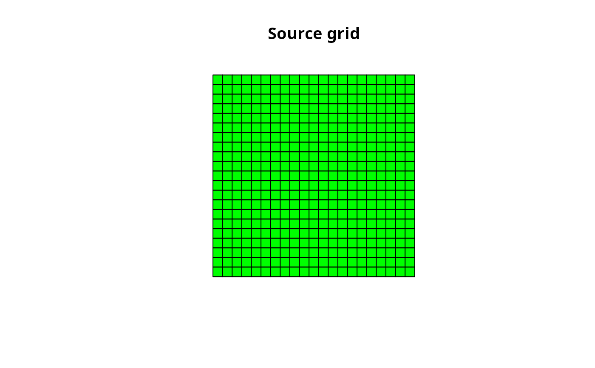
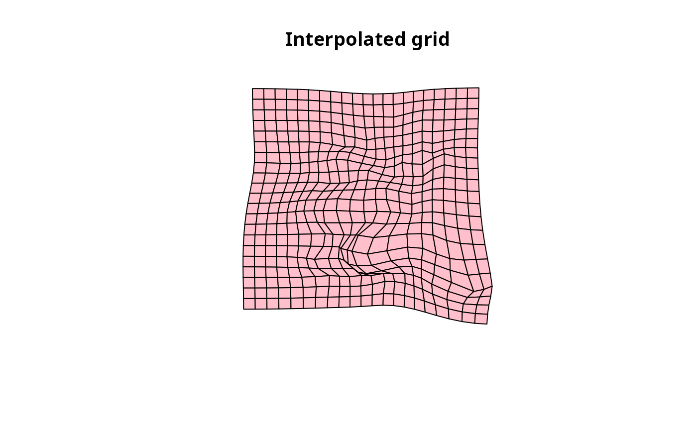
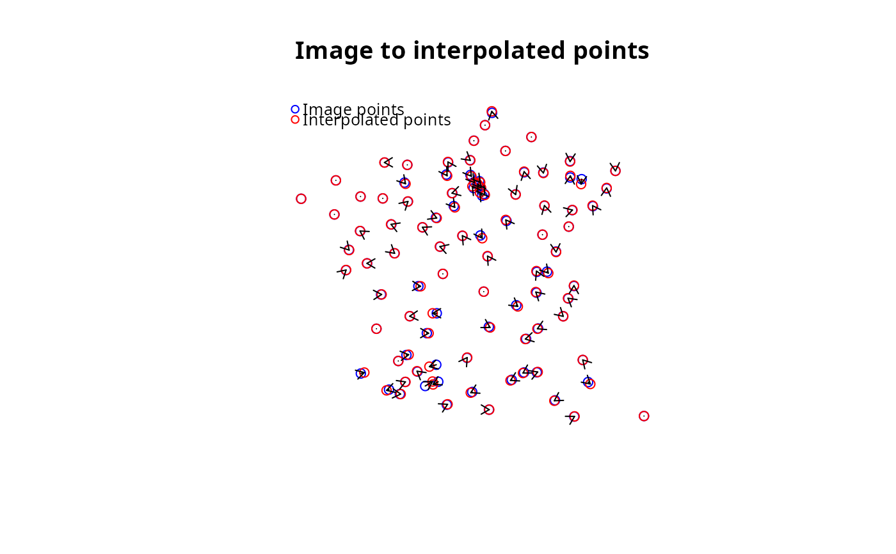
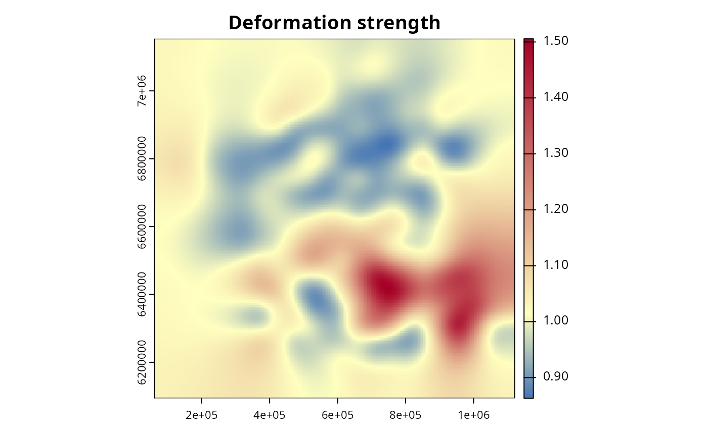

Create a new interpolation grid which covers the source points and with a cell size deduced from the precision.
The grid is then interpolated to match the image points. This then allows one to interpolate any point on the grid (enabling the deformation of geometries such as background layers) and to retrieve useful metrics about the deformation.
If the bbox provided does not cover all the source points, the grid will be extended to cover all the source points.
The precision controls the size of the grid cells (higher is more precise, for example 0.5 generally gives a coarse result, 2 a satisfactory result and 4 a particularly fine result). A precision of 2 is usually a good default value.
The number of iterations controls the number of iterations for the interpolation. It is generally 4 times the square root of the number of points (and this is the default value it the niter parameter is not provided.
Note that the number of source points must be equal to the number of image points, and either they must be supplied in the same order (as they are homologous points), or the name of a field containing an identifier must be supplied to enable them to be sorted in the same order.
Arguments
- source_points
The source point layer, sf POINT object
- image_points
The image point layer, sf POINT object
- precision
The precision of the grid to be created (a higher value means a higher precision - 0.5 gives usually a coarse result, 2 is good default, 4 is very detailed)
- bbox
The bounding box of the grid to be created
- niter
The number of iterations (default is
floor(4 * sqrt(length(source_points))))- sort_by
The field to sort the source and image points by
Examples
library(sf)
# Read source points
source_pts <- st_read(
dsn = system.file("gpkg/data-prefecture.gpkg", package = "distanamo"),
layer = "prefecture", quiet = TRUE
)
# Read image points
image_pts <- st_read(
dsn = system.file("gpkg/data-prefecture.gpkg", package = "distanamo"),
layer = "image-points", quiet = TRUE
)
# Read the background layer to deform
background_layer <- st_read(
dsn = system.file("gpkg/data-prefecture.gpkg", package = "distanamo"),
layer = "departement", quiet = TRUE
)
# Create the interpolation grid
igrid <- dc_create(
source_points = source_pts,
image_points = image_pts,
precision = 2,
bbox = st_bbox(background_layer)
)
# Plot various depictions of the interpolation grid
plot(igrid)




# Useful information about the interpolation grid
summary(igrid)
#> Summary of the interpolation grid:
#> Number of cells: 441
#> Precision: 50462.76 (α = 2)
#> Deformation strength: 1.041534
#> Mean absolute error: 3734.717
#> RMSE (interp - image): 4989.972
#> RMSE x (interp - image): 4060.84
#> RMSE y (interp - image): 2899.896
#> RMSE (interp - source): 42725.87
#> RMSE x (interp - source): 32080.25
#> RMSE y (interp - source): 28219.8
#> R squared: 0.9997285
# Deform the target layer
background_deformed <- dc_interpolate(
interpolation_grid = igrid,
layer_to_deform = background_layer
)
plot(st_geometry(background_deformed))